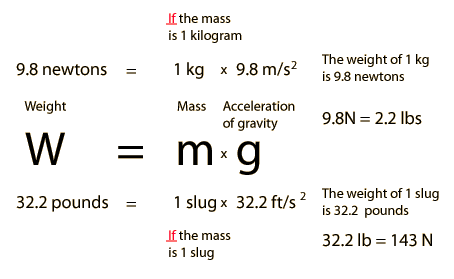
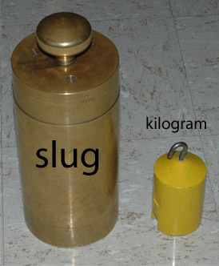
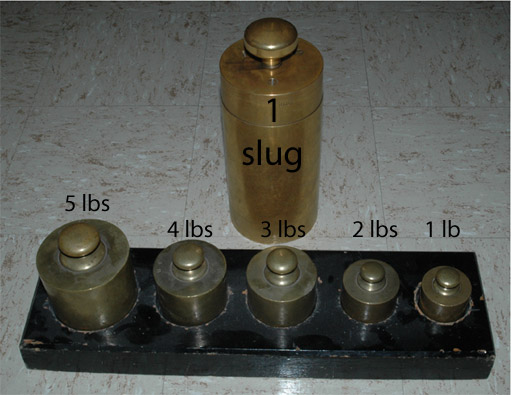
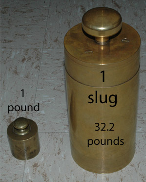

What is a Slug?
The slug is the unit of mass in the US common system of units, where the pound is the unit of force. The pound is therefore the unit of weight since weight is defined as the force of gravity on an object. While the pound force and pound weight are the widely used units for commerce in the United States, their use is strongly discouraged in scientific work. The standard units for most of scientific work are the SI units.

|  | A newton can be seen to be the force required to accelerate 1 kg of mass at 1 m/s2. To accelerate a 1 kg mass at 9.8 m/s2 would require 9.8 newtons, so on Earth the weight of 1 kg is 9.8 newtons. Similarly, a pound can be seen to be the force required to accelerate 1 slug of mass at 1 ft/s2. Since the acceleration of gravity in US common units is 32.2 ft/s2, it follows that the weight of one slug is 32.2 pounds. |

The comparison of the slug and the pound makes it clear why the size of the pound is more practical for commerce. But at the precision obtainable in current scientific work, it is undesirable to have the weight of an object as a standard because the value of g does change measurably at different points on the Earth. It is much better to have a standard in terms of mass. The standard kilogram is the mass reference for scientific work. |  |
These demonstration objects were photographed in Zig Peacock's excellent demonstration laboratory at the University of Utah in Salt Lake City.
|
Index
Newton's 2nd Law Concepts |